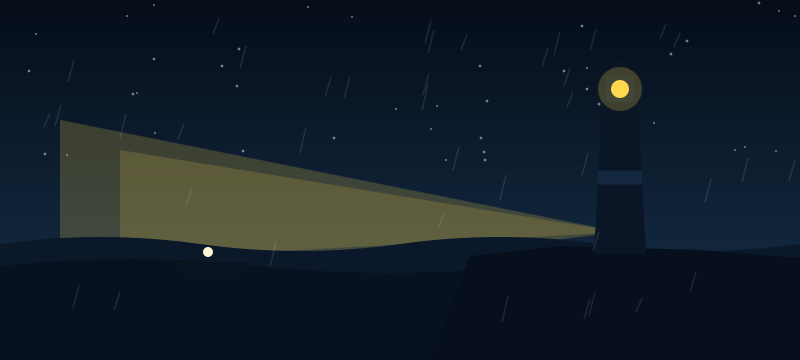

Ending: Light Restored
You push the fuse into its slot and the lamp roars back to life so brightly that you have to look away. The beam swings out across the water and the whole reef lights up white. The fishing boat turns hard away from the rocks with metres to spare and keeps going until it is well clear. Down in the radio room, the set crackles once and the calm voice says, "Thank you, Gull Rock," and then there is nothing but static, and the green tuning light goes out for good. You stay at the top of the tower until sunrise, watching the beam go round. This is the best ending.
THE END · Ending 6 of 6
There are five other endings. Different choices reach them.